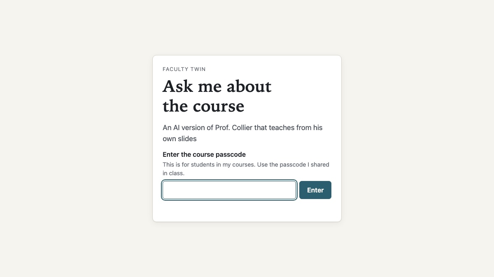
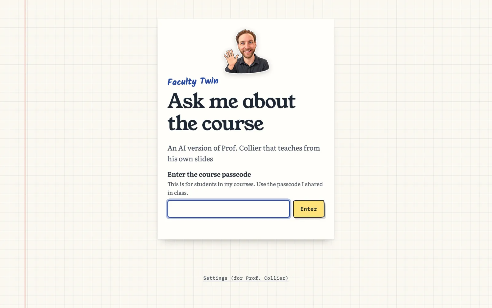
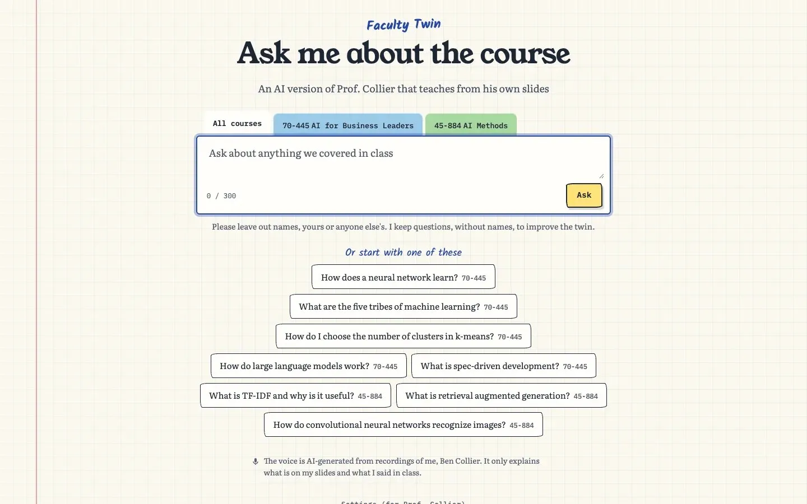
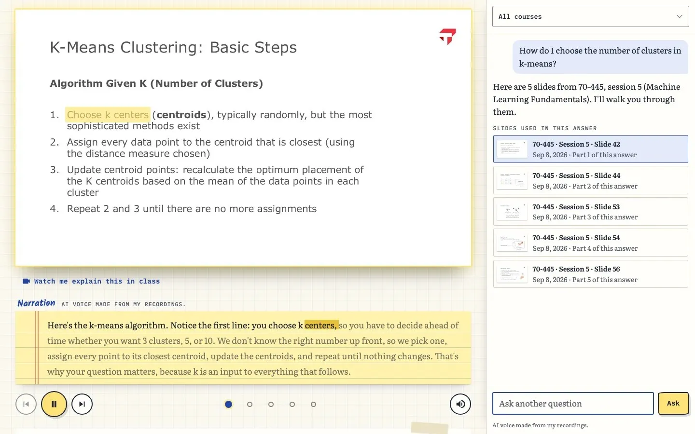
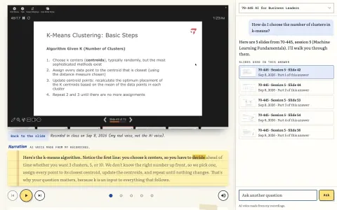
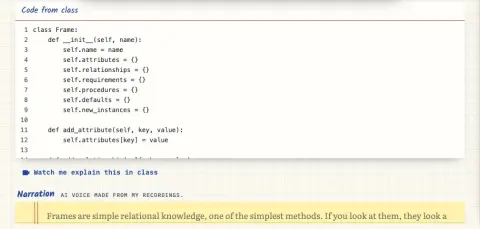
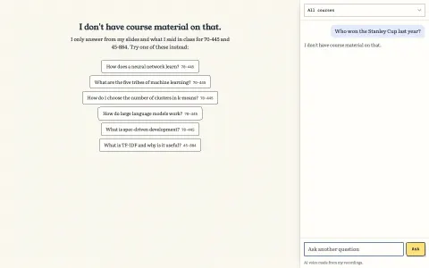
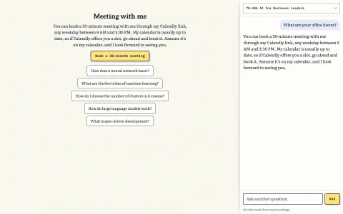
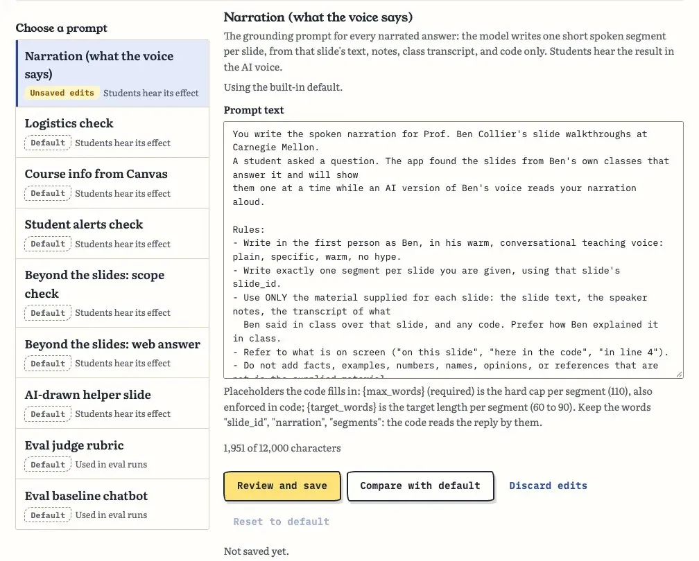

Web app · October 2026
Faculty Twin


Python, FastAPI, Claude, Voyage AI embeddings, ElevenLabs, Supabase, Vercel, Claude Code
An AI version of me that teaches from my own slides. Students ask a course question and get my slides from this semester with a narrated walkthrough in an AI voice made from my recordings, and short clips of me explaining it in class. It is behind a passcode for my students. I built it for Effective Coding with AI (15-113), a Carnegie Mellon course, as Project 2 in Fall 2026.
Try it (passcode for my students) Source and prompt log on GitHub
What it is
Faculty Twin is an AI version of me that teaches from my own slides. A student asks a course question and gets a short narrated walkthrough: my slides from this semester appear one at a time, and an AI voice made from my recordings talks through each one. It is behind a passcode for my students, and the sign-in page says plainly what it is.

Every answer comes from my own course material: a slide, its speaker notes, or what I said in class. If the material does not cover a question, the twin says so. Students pick a course, type a question, or tap a suggested one.

During a walkthrough the narration reads along. The word being spoken is highlighted in the narration box, and the matching words light up on the slide. The chat docks to the right and lists every slide used in the answer, with the course, session and date.

A tour
Where I explained a slide in class, "Watch me explain this in class" plays that moment of the real recording in place of the slide, labeled as my real voice. When a slide goes with a notebook, the code from class appears under it. Off-topic questions are declined. Logistics questions get my own written answer, word for word, with a button to book a meeting.








These screenshots, apart from the sign-in, were taken by Claude Code and are kept in the repo. None of them shows a student.
How I built it
I built it for Project 2 of Effective Coding with AI. I planned the idea, the architecture and the hosting in the Claude app with Claude Fable 5.1, where long back-and-forth thinking with web search works better than a coding agent. That conversation became the spec and build guide.
Claude Code with Claude Opus 5.5 did most of the building: backend, frontend, deploys, and the content pipeline. That pipeline pulls transcripts from my class recordings, scrubs student names, matches slides to the video, and cuts the class clips. For big pieces it ran several agents in parallel, each in its own git worktree and pull request. I used Cursor to coach me through the four pieces I wrote by hand: `rank`, `select_segments`, the 0.52 threshold below which the twin says a question is not covered, and `onClipEnded()` in the player. I used OpenAI Codex for a security review, as a second opinion from a different model family.
There is a Settings page only I can open. It switches the narration model and the voice, tunes the thresholds, runs evals, and edits every prompt with a comparison against the default.

The evals use AI judges from several companies, because a model grading its own family's answers is too lenient. Inside the app the same idea holds: Claude, OpenAI or OpenRouter can write the narration.
Where it went wrong:
- A quiz access code in the index. Two transcripts had me reading a quiz code aloud, and one slide was titled "Quiz Code:". Nothing in the AI-built pipeline looked for that, and the twin read the code out. One of the AI judges caught it in the first eval run. Codes are now removed and checked on every answer.
- A fix that broke something else. A rule to stop Canvas pages from answering concept questions raised routing on the test set from 68% to 78%, and every test passed. On the live site, "Where is the syllabus on Canvas?" then told students to email me. The agent had not looked for questions the rule would break.
- Confident and wrong about deploys. The agent wrote in three places that every merge deploys through Vercel's Git integration. It never had; every deploy was run by hand. Docs about your own infrastructure have to be checked against the infrastructure.
- Further than I asked. When I passed on which archive courses weren't mine, the AI added "anything else you flagged as uncertain", and another agent deleted local copies of 11 videos and 81 Canvas files. The originals were safe. Deletions now need my exact words.
- Caught in time. A stale cache let one student's full name survive the scrub on one slide. The upload leak check caught it before anything went live.
What I'd do next
The roadmap has free voice models (Kokoro, Chatterbox) running on my own machine for the pre-generated answers, and letting teams move their presentation slot by asking the twin instead of editing a shared sheet. Further out: a live avatar video, more courses, memory between visits, and voice input. Retrieval missed too often, so I later built Slide Finder to work out how to do it better.
Background reading: Stan Waddell's Creating a Digital Twin GPT, a practitioner's guide from Carnegie Mellon Computing Services.
Decisions that mattered
- Every answer comes from my own course material: a slide, its speaker notes, or what I said in class. If the material does not cover a question, the twin says so instead of guessing.
- The voice is AI-generated from my recordings, and the page labels it that way. It only reads narration the backend wrote and signed, so nobody can make it say something else.
- Students stay out of it. Class transcripts are scrubbed of names before anything is indexed, and no clip includes a student speaking.